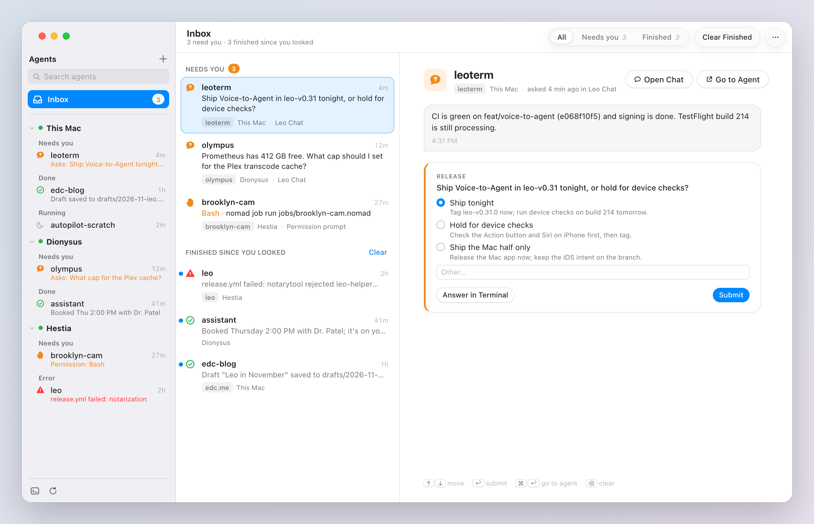
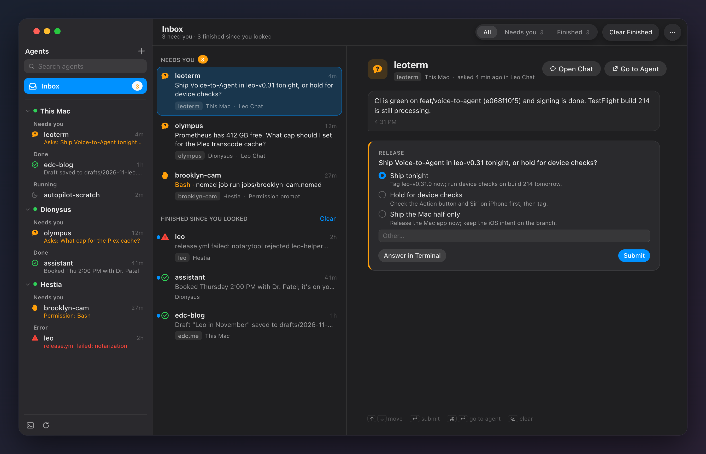
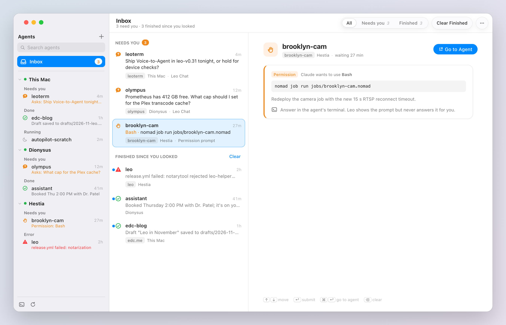
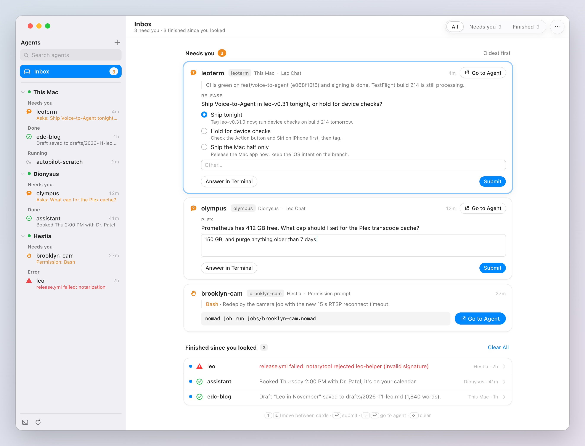
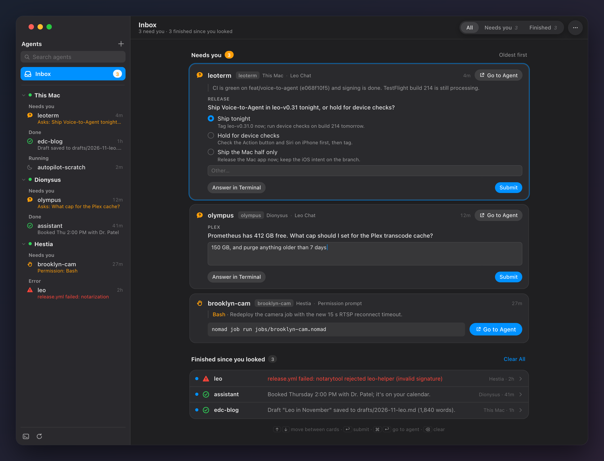
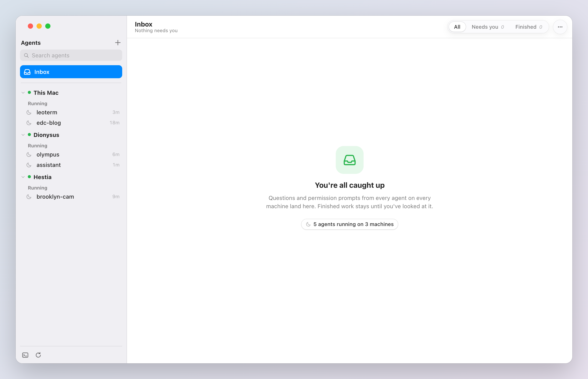
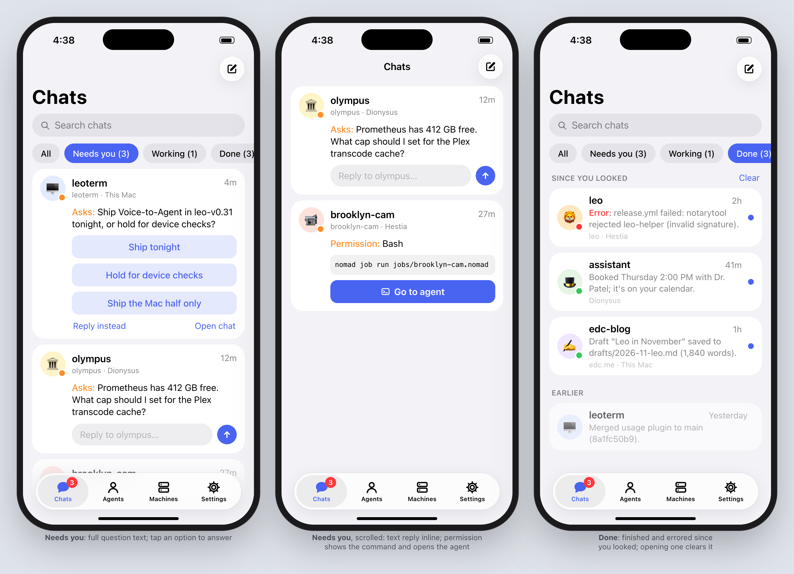
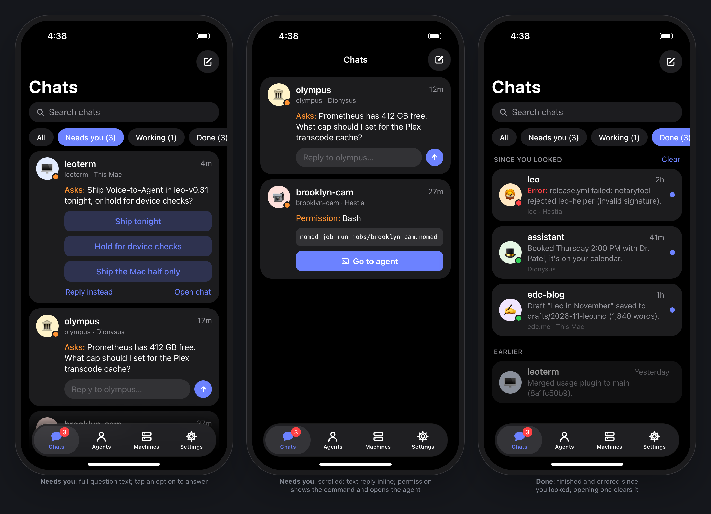
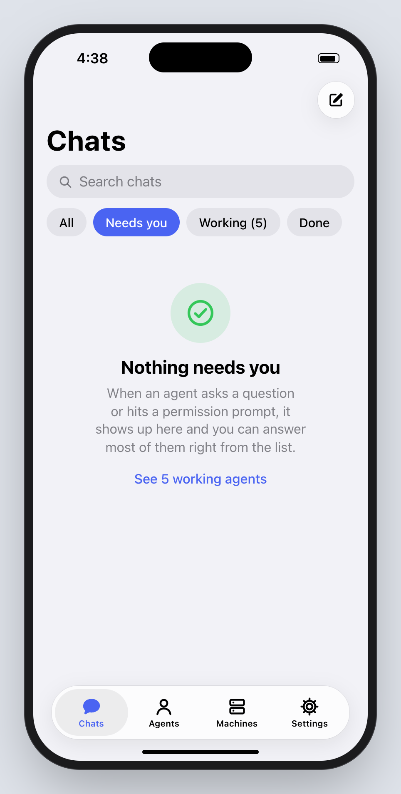

Inbox
One place for what needs you (open questions, permission prompts) and what finished since you looked, across every agent and machine. Static mockups; open each HTML file directly, or add ?theme=dark.
Mac A: list + detail (mac-a-split.html)
Inbox is a pinned sidebar row with a count badge; selecting it swaps the content area for a Mail-style list and a detail pane that reuses the chat questions card.



Mac B: single column (mac-b-stream.html)
Every needs-you item is an open card answered in place; finished items are one-line rows below.


Mac empty (mac-empty.html)

iOS: Chats inbox (ios.html, ios-empty.html)
Needs you rows show the full question and answer controls; Done holds finished and errored work until it is opened.


